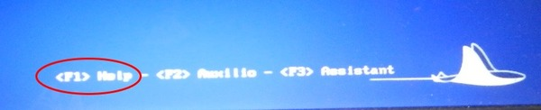
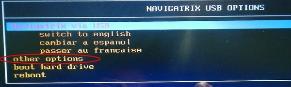
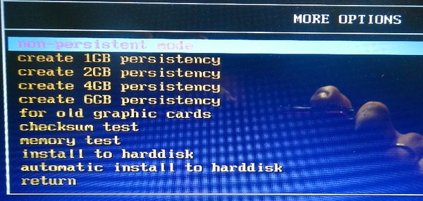
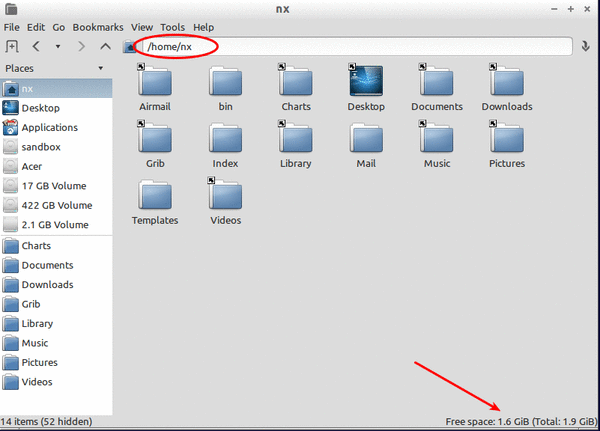
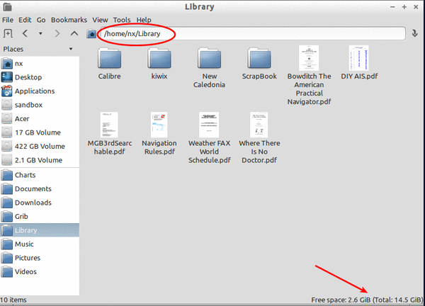

One of the nice things about Navigatrix is that you can run the entire system from the bootable USB stick or SD card, with your hard drive turned off and therefore not subjected to the heaving and banging of a moving boat (or the vibration from an engine for that matter). Many Navigatrix users have it installed on their hard drive (it will boot much faster compared to the USB stick) but also keep a bootable USB stick/SD card which they can use under way. In this case it is a good idea to use a stick/card bigger than the required 4GB minimum in order to keep charts and any documents you may want to access under way on the stick. An 8GB stick or card works well for many folks. 16GB may be a good idea if you plan to put the Kiwix offline version of Wikipedia (just short of 4GB) on the stick or card.
Note that you can access the hard drive from the stick if you need to, for example to copy files to and from the USB stick. The hard drive will show up in the Navigatrix File Manager (see “The Applications”) and can be “mounted” (i.e. made available for access) by clicking on it. In this case the hard drive will no longer be “parked” though. To “unmount” the drive you will have to “eject” it by pressing the little eject symbol next to it in the File Manager when done.
If you run Navigatrix from the USB stick/SD card you will likely want that changes you make to settings and preferences are retained from boot to boot so that you don't have to re-configure e.g. your keyboard layout every time you start Navigatrix. To do so you will need to set up your USB stick/SD card with a “persistency file area”. This area will include central system files as well as your home directory. The way you set up this persistency file area differs between versions 0.4 and 0.5 of Navigatrix.
If you obtained your copy of Navigatrix as a “copy from a friend” of a version 0.4 USB stick the home directory on your USB stick will have a fixed and relatively small size of 500 MB by default. This size makes sense on a 4GB stick. However, even if you use a larger capacity USB stick, your home directory will be limited to 500MB (this limitation does not apply to the Documents, Library, Music, etc. subdirectories under home which can take up the available capacity on the stick). Since most application related configuration and log files are stored in the fixed-size portion of your home directory, it is possible to hit the ceiling on the 500MB limit rather quickly. See this post on the Navigatrix Support Discussion Board for instructions on how you can raise the 500MB limit on your USB stick with Navigatrix 0.4.
With Navigatrix 0.5 you can create a persistency file area through a selection in the boot menu. When booting from the USB stick you will see a help menu displayed at the bottom of the screen for about 10 seconds before the boot starts in earnest.

Pressing the function key for your preferred language will provide you with the following menu.

Press the “down” arrow key to move the selection down to and press [enter]. This will get you to a sub menu in which you can choose to create persistency areas of different sizes:

The persistency size you select here depends on the capacity of your USB stick and your preferences. In addition to the system files the persistency area has to accommodate your home directory but not the Desktop, Documents, Downloads, Library, Music, Pictures, and Videos subdirectories, and also not the Charts directory. These are set up as links to a portion of the USB stick outside the persitency area and can take up the balance of the USB stick's capacity. The portion of the home directory that sits within the persistency area will contain any files stored directly under /home/<user>. This includes for example configuration files, local email files, web browser cache, and application log files.
As a rough benchmark you could consider 1GB persistency for an 8GB USB stick, 2GB for a 16GB stick and 4-6GB for anything larger. Again: it depends on your intended use. When under way, I use a 16GB stick with 2GB persistency and never had reason to complain.
After you select your preferred persistency size and press [enter] the software will do it's magic and inform you once it is done - at which point you can re-boot. The images below show the split between persistency area and the remainder of the USB stick's capacity on 16GB stick after it has been set up with 2GB persistency as described above. The first image shows the persistency portion which - in its virigin state - has 1.6GB of 1.9GB remaining free space.

The second image shows that there are 2.6GB left for files in the Charts, Desktop, Documents, Downloads, Library, Music, Pictures, and Videos subdirectories. This is after already populating the USB stick with charts (about 3GB), the Kiwix offline Wikipedia (about 4GB), and some other files.

The image shows the ~/Library subdirectory but the 2.6GB represents avaiable space that is shared between all the subdirectories listed above.